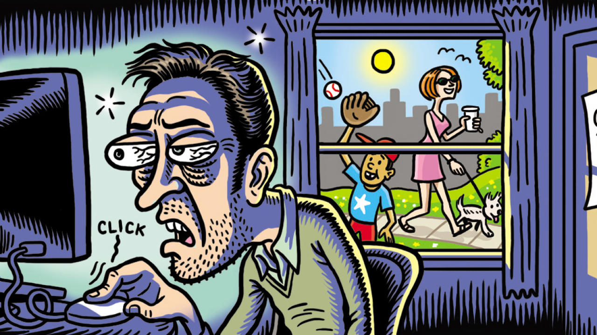

TRASTORNO DE ADICCIÓN AL INTERNET
La adicción a Internet puede ser definida como una forma extrema en la que se manifiesta este fenómeno. Es un problema del control de los impulsos, que se caracteriza por la incapacidad de abstenerse o moderar su uso. Como cualquier otra adicción, afecta diversas áreas del desempeño vital del individuo como amistades, pareja, familia o trabajo.
Esta problematica afecta tres dimensiones fundamentales las cuales son:
1.- Preocupación emocional y cognitiva por el acceso a Internet.
2.- Descuido del trabajo (estudios) y falta de autocontrol.
3.- Problemas sociales.

Sin lugar a dudas, es la preocupación emocional y cognitiva la que mayor peso tiene a la
hora de
determinar el uso problemático de Internet, sin embargo las dos restantes permiten establecer
diferencias de género.
En el caso de las chicas, elevadas puntuaciones en la primera dimensión
tendían a
combinarse con puntuaciones más elevadas en el descuido del trabajo y falta de autocontrol, mientras que
para los chicos la combinación se establecía con los problemas sociales.
Rasgos De Personalidad Asociados
Los resultados de un estudio publicado en 2019 en Behaviour and Information Technology
permitieron establecer una asociación negativa entre el uso de Internet y determinados rasgos de personalidad.
En este sentido, los rasgos de nuestra personalidad que más afectados se ven suelen ser la autoestima, la
amabilidad, la conciencia, la apertura a las experiencias y la estabilidad emocional.

No es de extrañar que la calidad de vida se reduce cuando se observa un patrón de abuso de Internet. De
hecho, otro estudio publicado en Technology in Society sugiere que en la medida que este patrón se cronifica, la
felicidad y la calidad de vida disminuyen drásticamente. Ello puede ser debido a que el aumento de la presencia
de emociones negativas ocurre de forma simultánea a la disminución de las positivas.
Adicción Al Internet: